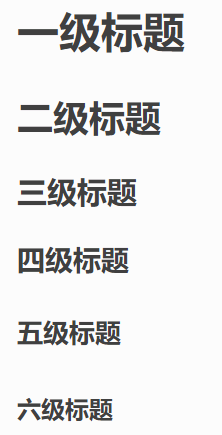

reST基础语法¶
RestructureText(ReST)是Docutils和Sphinx都使用的默认明文标记语言。 Docutils提供了基本的重构文本语法，而Sphinx对此进行了扩展，以支持额外的功能。 可以使用这个在线的rst编辑器了解相关语法：rst在线编辑器
restruct语法官网：https://docutils.sourceforge.io/docs/user/rst/
reST参考网站：https://www.sphinx-doc.org/en/master/usage/restructuredtext/index.html
下面是常用语法：
章节标题¶
在文本下一行（或上一行）添加至少与文本长度同宽的符号，即可以使文本成为标题,
= - ` : ' " ~ ^ _ * + # < > 这些符号都可以:
一级标题
===============
二级标题
~~~~~~~~~~~~~~~
三级标题
---------------
四级标题
^^^^^^^^^^^^^^^
五级标题
"""""""""""""""
六级标题
***************
效果如下：
字体样式¶
符号外侧必须留有空格, 英文标点符号:
**强调**
*斜体*
``红色字体块``
:guilabel:`背景块`
.. centered:: 黑体中心字体
无序列表:
- hhhhhhhh
- hhhhhhhh
- hhhhhhhh
* 列表第一级
+ 第二级
- 第三级
+ 第二级的另一个项目
有序列表:
支持数字、大小写字母和罗马数字
1. hhhhhhhh
#. hhhhhhhh
#. hhhhhhhh
a. hhhhhhhh
#. hhhhhhhh
#. hhhhhhhh
效果如下：
强调
斜体
红色字体块
背景块
无序列表:
hhhhhhhh
hhhhhhhh
hhhhhhhh
列表第一级
第二级
第三级
第二级的另一个项目
有序列表:
支持数字、大小写字母和罗马数字
hhhhhhhh
hhhhhhhh
hhhhhhhh
hhhhhhhh
hhhhhhhh
hhhhhhhh
提示框¶
特殊提示支持警告、重要、提示、注意等标签，适合做显眼的用途。 语法：
.. note:: This is note.(注解)
.. attention:: Directives at large.(注意)
.. warning:: This is warning.(警告)
.. caution:: Don't take any wooden nickels.(警告)
.. seealso:: This is seealso.(参见)
.. danger:: Mad scientist at work!(危险)
.. error:: Does not compute.(错误)
.. hint:: It's bigger than a bread box.(提示)
.. important::
- Wash behind your ears.
- Clean up your room.
- Call your mother.
- Back up your data.(重要)
.. tip:: 15% if the service is good.(小技巧)
.. admonition:: by the way
You can make up your own admonition too.
效果如下：
Note
This is note.(注解)
Attention
Directives at large.(注意)
Warning
This is warning.(警告)
Caution
Don’t take any wooden nickels.(警告)
See also
This is seealso.(参见)
Danger
Mad scientist at work!(危险)
Error
Does not compute.(错误)
Hint
It’s bigger than a bread box.(提示)
Important
Wash behind your ears.
Clean up your room.
Call your mother.
Back up your data.(重要)
Tip
15% if the service is good.(小技巧)
by the way
You can make up your own admonition too.
超链接¶
语法：
1.直接嵌入： `野火公司官网 <http://www.embedfire.com>`_
2.使用引用的方式把具体网址定义在其它地方：
- 单个词汇：External hyperlinks, like Python_.
- 多个词汇时，使用``, `fire website`_
.. _Python: http://www.python.org/
.. _fire website: http://www.embedfire.com
效果：
1.直接嵌入： 野火公司官网
2.使用引用的方式把具体网址定义在其它地方：
单个词汇：External hyperlinks, like Python.
多个词汇时，使用``, fire website
图片¶
显示图片直接使用image或figure指令，还需要添加“alt”选项指定图片的描述 （类似doc中的题注），以便图片加载失败时显示文字, 不要使用bmp图片 ， bmp图片在生成pdf的时候会丢失，所以不要使用bmp格式的图片。
{kind=link}
视频¶
使用raw指令插入html代码。直接粘贴视频网站的通用html代码，不过貌似不能放大。 在vscode可能无法预览，直接在浏览器中看即可。
语法：
.. raw:: html
<iframe height=498 width=510 src='http://player.youku.com/embed/XMzk2MzQxNTQ3Ng==' frameborder=0 'allowfullscreen'></iframe>
效果：
代码高亮¶
参考说明： http://www.sphinx-doc.org/en/master/usage/restructuredtext/directives.html#toctree-directive
支持的高亮语言： https://pygments.org/docs/lexers#lexers-for-various-shells
在reST文档中列出代码有三种方式：
单行代码 用``code``
简单代码块 在代码块的上一个段落后面加2个冒号，空一行后开始代码块，代码块要缩进
复杂代码块 使用code-block指导语句，还可以选择列出行号和高亮重点行等
简单代码块¶
示例：
::
#此命令在主机执行
sudo apt install python
echo "helloworld,this is a script test!"
效果：
#此命令在主机执行
sudo apt install python
echo "helloworld,this is a script test!"
复杂代码块¶
示例：
.. code-block:: c
:caption: test
:name: test333
:emphasize-lines: 2,4-9
:linenos:
int main()
{
printf("hello, world! This is a C program.\n");
for(int i=0;i<10;i++ ){
printf("output i=%d\n",i);
}
return 0;
}
注意：
code-block 后面可以是不同的编程语言，sh、c、v(verilog)、python、makefile等
caption -> 代码前面显示的名字
name -> 自定义名字，方便其他地方使用此名字加下划线来引用
emphasize-lines -> 高亮的行
linenos -> 显示行数
效果：
1 2 3 4 5 6 7 8 9 | int main()
{
printf("hello, world! This is a C program.\n");
for(int i=0;i<10;i++ ){
printf("output i=%d\n",i);
}
return 0;
}
|
literalinclude直接嵌入本地文件并高亮¶
直接嵌入文件，包含标题、代码语言、高亮、带编号以及名称方便引用。
.. literalinclude:: democode/hello.c
:caption: ../../base_code/hello.c
:language: c
:emphasize-lines: 5,7-12
:linenos:
:name: hello.c
效果：
1 2 3 4 5 6 7 8 9 10 11 12 13 14 | /* $begin hello */
#include <stdio.h>
int main()
{
printf("hello, world! This is a C program.\n");
for(int i=0;i<10;i++ ){
printf("output i=%d\n",i);
}
return 0;
}
/* $end hello */
|
表格¶
表格语法说明：http://docutils.sourceforge.net/docs/ref/rst/directives.html#csv-table
推荐使用列表式表格，修改比较方便
列表式表格¶
语法：
.. list-table:: Frozen Delights!
:widths: 15 10 30
:header-rows: 1
* - Treat
- Quantity
- Description
* - Albatross
- 2.99
- On a stick!
* - Crunchy Frog
- 1.49
- If we took the bones out, it wouldn't be
crunchy, now would it?
* - Gannet Ripple
- 1.99
- On a stick!
效果：
Treat |
Quantity |
Description |
|---|---|---|
Albatross |
2.99 |
On a stick! |
Crunchy Frog |
1.49 |
If we took the bones out, it wouldn’t be crunchy, now would it? |
Gannet Ripple |
1.99 |
On a stick! |
普通表格¶
表格使用 == 号制作
语法示例：
===== ===== =======
A B A and B
===== ===== =======
False False False
True False False
False True False
True True True
===== ===== =======
效果：
A |
B |
A and B |
|---|---|---|
False |
False |
False |
True |
False |
False |
False |
True |
False |
True |
True |
True |
在vscode可安装插件方便格式化表格：https://marketplace.visualstudio.com/items?itemName=shuworks.vscode-table-formatter
安装后通过Ctrl-Shift-P调用 Table: Format Current 或 Table: Format All
CSV表格¶
使用CSV编写
.. csv-table:: Frozen Delights!
:header: "Treat", "Quantity", "Description"
:widths: 15, 10, 30
"Albatross", 2.99, "On a stick!"
"Crunchy Frog", 1.49, "If we took the bones out, it wouldn't be
crunchy, now would it?"
"Gannet Ripple", 1.99, "On a stick!"
效果：
Treat |
Quantity |
Description |
|---|---|---|
Albatross |
2.99 |
On a stick! |
Crunchy Frog |
1.49 |
If we took the bones out, it wouldn’t be crunchy, now would it? |
Gannet Ripple |
1.99 |
On a stick! |
引用¶
引用图片、表格¶
在图片、表格上面加一个下划线的引用标签，然后在下面通过 ref指令引用。
示例1：
.. _my-reference-label:
.. figure: pic/fire.png
:alt: 野火logo
:align: center
name
:ref:`my-reference-label` 。
效果：
name¶
示例2：
.. _Table1:
.. table:: 拨码开关启动配置表
==== ====== ========== ==== == ===
编号 名称 NAND FLASH eMMC SD USB
==== ====== ========== ==== == ===
1 MODE0 0 0 0 1
2 MODE1 1 1 1 0
3 CFG1-4 1 0 0 X
4 CFG1-5 0 1 0 X
5 CFG1-6 0 1 1 X
6 CFG1-7 1 0 0 X
7 CFG2-3 0 1 0 X
8 CFG2-5 0 0 1 X
==== ====== ========== ==== == ===
:ref:`Table1`
:ref:`自定义引用名称 <Table1>`
效果：
编号 |
名称 |
NAND FLASH |
eMMC |
SD |
USB |
|---|---|---|---|---|---|
1 |
MODE0 |
0 |
0 |
0 |
1 |
2 |
MODE1 |
1 |
1 |
1 |
0 |
3 |
CFG1-4 |
1 |
0 |
0 |
X |
4 |
CFG1-5 |
0 |
1 |
0 |
X |
5 |
CFG1-6 |
0 |
1 |
1 |
X |
6 |
CFG1-7 |
1 |
0 |
0 |
X |
7 |
CFG2-3 |
0 |
1 |
0 |
X |
8 |
CFG2-5 |
0 |
0 |
1 |
X |
引用文档¶
示例：
:doc:`base-syntax`
链接到当前目录的base-syntax.rst文档，且显示为其标题
:doc:`our two different sites <base-syntax>`
链接到当前目录的base-syntax.rst文档
效果：
脚注¶
与引用语法类似，只是它在正文中显示的不是文本，而是编号。
示例：
Footnote references, like [5]_.using [#]_ and [#]_.
instant[#fourth]_ and [#third]_.reference[DOC]_.
Footnotes
.. [5] A numerical footnote.
.. [#] This is the first one.
.. [#] This is the second one.
.. [#third] a.k.a. third
.. [#fourth] a.k.a. fourth
.. [DOC] A citation
效果：
Footnote references, like 9.using 1 and 2. instant[#fourth]_ and 3.reference[DOC]_.
Footnotes:
- 9
A numerical footnote.
- 1
This is the first one.
- 2
This is the second one.
- 3
a.k.a. third.
- 4
a.k.a. fourth.
- DOC
A citation